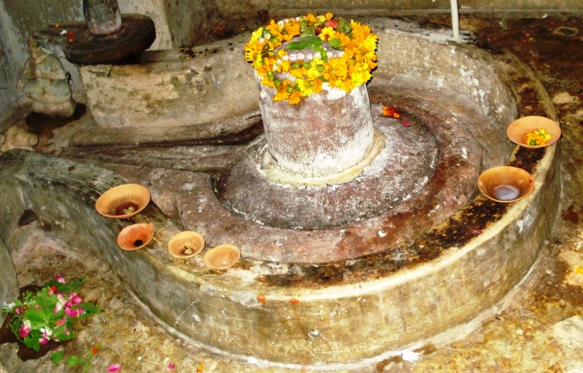
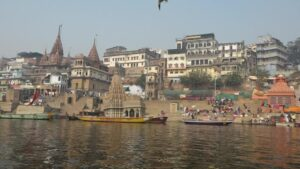
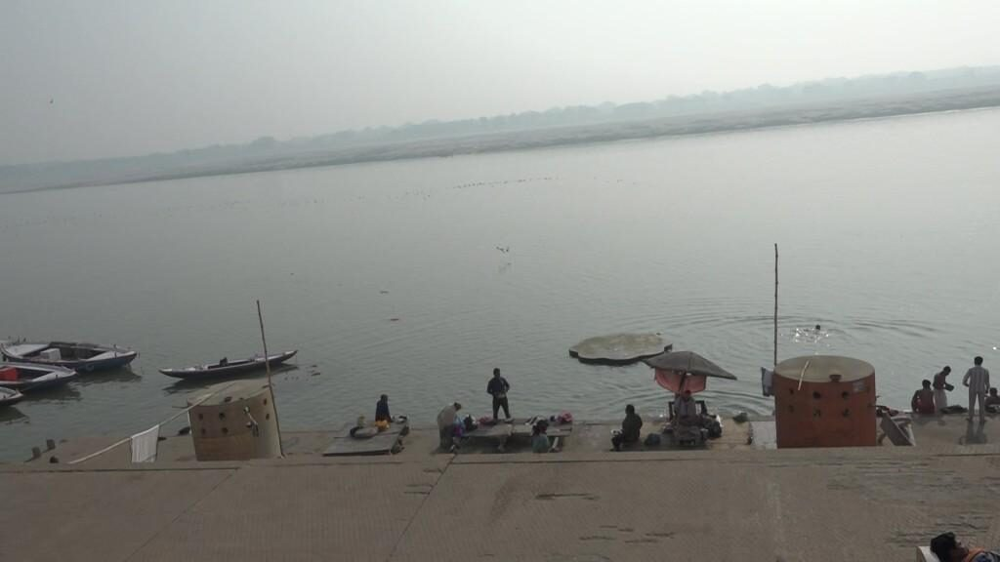
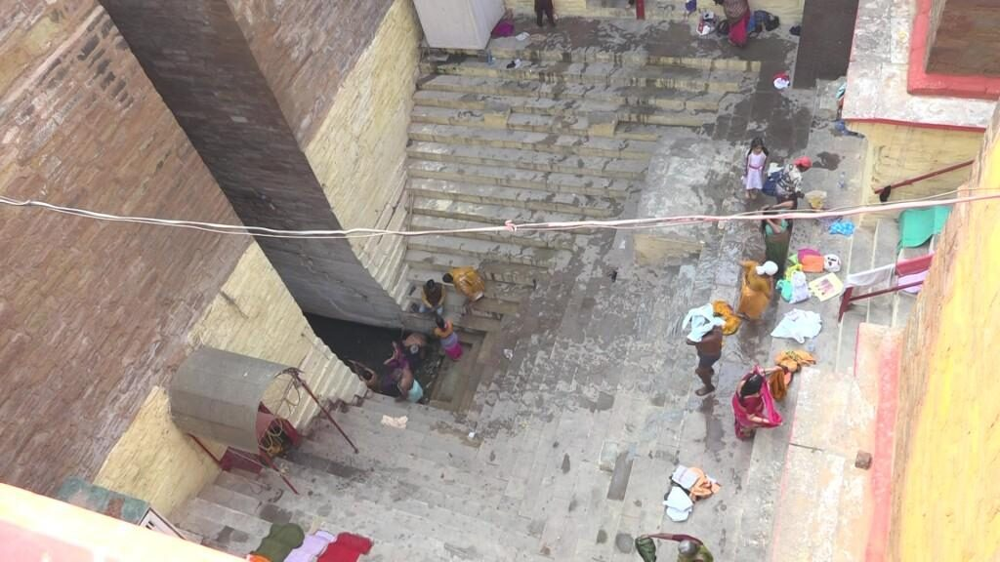
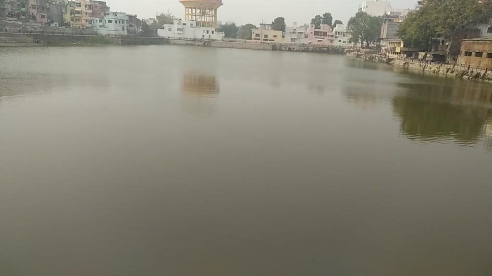

<?xml version="1.0" encoding="UTF-8"?><rss version="2.0"
	xmlns:content="http://purl.org/rss/1.0/modules/content/"
	xmlns:wfw="http://wellformedweb.org/CommentAPI/"
	xmlns:dc="http://purl.org/dc/elements/1.1/"
	xmlns:atom="http://www.w3.org/2005/Atom"
	xmlns:sy="http://purl.org/rss/1.0/modules/syndication/"
	xmlns:slash="http://purl.org/rss/1.0/modules/slash/"
	>

<channel>
	<title>Varanasi Temples</title>
	<atom:link href="index.html" rel="self" type="application/rss+xml" />
	<link>../index.html</link>
	<description>Temples of Varanasi as referred to in Kashi Khand</description>
	<lastBuildDate>Thu, 19 Jun 2025 05:16:46 +0000</lastBuildDate>
	<language>en-US</language>
	<sy:updatePeriod>hourly</sy:updatePeriod>
	<sy:updateFrequency>1</sy:updateFrequency>
	<generator>https://wordpress.org/?v=4.6.29</generator>
	<item>
		<title>JARASANDHESHWAR</title>
		<link>../shiva-temples/other-shiva-temples-e-k/jarasandheshwar/index.html</link>
		<pubDate>Mon, 23 Jan 2023 06:53:05 +0000</pubDate>
		<dc:creator><![CDATA[admin]]></dc:creator>
				<category><![CDATA[Other Shiva Temples (E-K)]]></category>

		<guid isPermaLink="false">../index.html</guid>
		<description><![CDATA[According to Chapter 97 of Kashi Khand, in the vicinity of Vishalakshy is the Jarasandheshwar Ling. By worshipping this Ling, the devotee may be cured of any illness. This Ling has been described as Jwara Nashak (Fever eradicator). In ancient times there was not much medical advancement and people used to worship various deities for [&#8230;]]]></description>
				<content:encoded><![CDATA[<h4 style="margin-left: 34.4pt;"></h4>
<p>According to Chapter 97 of Kashi Khand, in the vicinity of Vishalakshy is the Jarasandheshwar Ling. By worshipping this Ling, the devotee may be cured of any illness. This Ling has been described as Jwara Nashak (Fever eradicator).</p>
<p>In ancient times there was not much medical advancement and people used to worship various deities for being cured of any disease. Nowadays</p>
<p>lot of pathological and diagnostic tests are available to determine the exact type of ailment. Our enquiries reveal that even now devout people worship this deity for riddance from fevers etc.</p>
<p></p>
<p>&nbsp;</p>
<p style="text-align: center;"><strong>(JARASANDHESHWAR)</strong></p>
<p><u>LOCATION OF JARASANDHESHWAR</u></p>
<p>Jarasandheshwar is located at D-3/71, Mir Ghat, Bare Hanuman Temple. Devotees can travel upto Dasaswamedh Vishwanath Gully by rickshaw and walk on foot to this place through Vishalakshi Gauri Temple, which is a famous landmark. Alternatively they can travel by boat upto Mir Ghat and walk up the steps and reach the place.</p>
<p><u>TYPES OF POOJA</u></p>
<p>&nbsp;</p>
<p>The temple is open from 07.00 a.m. to 01.00 p.m. and from 04.00 p.m. to</p>
<p>09.00 p.m. Aarties are held in the morning and evening.</p>
<p>&nbsp;</p>
<p><u>POOJARIES OF THE TEMPLE</u></p>
<p>&nbsp;</p>
<p>Shri Rajeshwar Prasad is the poojari of the temple.</p>
]]></content:encoded>
			</item>
		<item>
		<title>SHIV LINGS IN KASHI WORSHIPPED AS JYOTIRLINGS</title>
		<link>https://varanasitemples.in/jyotir-lings/shiv-lings-in-kashi-worshipped-as-jyotirlings/</link>
		<pubDate>Mon, 11 Feb 2019 16:57:25 +0000</pubDate>
		<dc:creator><![CDATA[admin]]></dc:creator>
				<category><![CDATA[SHIV LINGS IN KASHI WORSHIPPED AS JYOTIRLINGS]]></category>
		<category><![CDATA[baijnatheshwar]]></category>
		<category><![CDATA[jyotirling]]></category>

		<guid isPermaLink="false">../index.html</guid>
		<description><![CDATA[JYOTIRLINGS ON ALL INDIA BASIS CORRESPONDING TEMPLES IN KASHI Somnath, Saurashtra Someshwar, Man Mandir  Ghat Mallikarjun, Shri Shailam Tripurantakeshwar, Sigra Mahakaleshwar, Ujjain Mahakaleshwar, Daranagar Omkareshwar, near Indore Omkareshwar, beyond Machhodari Baijnath, Parli (Maharashtra) / Bihar Baijnatheshwar, Kamachha Bheema Shankar, Nashik-Pune Rd Bheemeshwar, Kashi Karvat Temple Rameshwar (Tamil Nadu) Ganeshwar(Rameshwar), Man Mandir Ghat Nageshwar (Maharashtra/ Dwarka) [&#8230;]]]></description>
				<content:encoded><![CDATA[<table>
<tbody>
<tr>
<td width="223">
<p style="text-align: center;"><strong>JYOTIRLINGS ON ALL INDIA BASIS</strong></p>
</td>
<td style="text-align: center;" width="264"><strong>CORRESPONDING TEMPLES IN KASHI</strong></td>
</tr>
<tr>
<td width="223">Somnath, Saurashtra</td>
<td width="264">Someshwar, Man Mandir  Ghat</td>
</tr>
<tr>
<td width="223">Mallikarjun, Shri Shailam</td>
<td width="264">Tripurantakeshwar, Sigra</td>
</tr>
<tr>
<td width="223">Mahakaleshwar, Ujjain</td>
<td width="264">Mahakaleshwar, Daranagar</td>
</tr>
<tr>
<td width="223">Omkareshwar, near Indore</td>
<td width="264">Omkareshwar, beyond Machhodari</td>
</tr>
<tr>
<td width="223">Baijnath, Parli (Maharashtra) / Bihar</td>
<td width="264">Baijnatheshwar, Kamachha</td>
</tr>
<tr>
<td width="223">Bheema Shankar, Nashik-Pune Rd</td>
<td width="264">Bheemeshwar, Kashi Karvat Temple</td>
</tr>
<tr>
<td width="223">Rameshwar (Tamil Nadu)</td>
<td width="264">Ganeshwar(Rameshwar), Man Mandir Ghat</td>
</tr>
<tr>
<td width="223">Nageshwar (Maharashtra/ Dwarka)</td>
<td width="264">Nageshwar, Bhonsla Ghat</td>
</tr>
<tr>
<td width="223">Visweshwar (Varanasi)</td>
<td width="264">Visweshwar (Varanasi), same</td>
</tr>
<tr>
<td width="223">Triambakeshwar (Nashik)</td>
<td width="264">Triambakeshwar, Godowlia</td>
</tr>
<tr>
<td width="223">Kedareshwar, Uttarakhand</td>
<td width="264">Kedareshwar, Kedar Ghat</td>
</tr>
<tr>
<td width="223">Grishneshwar (Ellora, Maharashtra)</td>
<td width="264">Grishneshwar, Kamakhya Devi Temple</td>
</tr>
</tbody>
</table>
<p>&nbsp;</p>
<p><strong>&#8212;&#8212;&#8212;&#8212;&#8212;&#8212;&#8212;&#8212;&#8212;&#8212;&#8212;&#8212;&#8212;&#8212;&#8212;&#8212;&#8212;&#8212;&#8212;&#8212;&#8212;&#8212;&#8212;&#8212;&#8212;&#8212;&#8212;&#8212;&#8212;&#8212;&#8212;&#8212;&#8212;&#8212;-</strong></p>
<p><strong>Kashi Khand, Chapter 25, Shlok 46</strong></p>
<p><strong>त्रिरात्रमपि ये काश्यां वसन्ति नियतेन्द्रिया :</strong></p>
<p><strong>तेषां पुनन्ति नियतं स्पृष्टाश्चरणरेणव:</strong></p>
<p>&nbsp;</p>
<p><strong>Devotees who spends three nights in Kashi religiously become highly respectable that merely touching their feet is considered auspicious (punya karma).</strong></p>
<p><strong>&#8212;&#8212;&#8212;&#8212;&#8212;&#8212;&#8212;&#8212;&#8212;&#8212;&#8212;&#8212;&#8212;&#8212;&#8212;&#8212;&#8212;&#8212;&#8212;&#8212;&#8212;&#8212;&#8212;&#8212;&#8212;&#8212;&#8212;&#8212;&#8212;&#8212;&#8212;&#8212;&#8212;&#8212;&#8212;</strong></p>
<p>&nbsp;</p>
<p><strong>Please watch our YouTube videos on Jyotirlings in Kashi in the  following links</strong></p>
<p>&nbsp;</p>
<p><a href="https://www.youtube.com/watch?v=1OSYpqeUaVI&amp;t=9s">https://www.youtube.com/watch?v=1OSYpqeUaVI&amp;t=9s</a></p>
<p>&nbsp;</p>
<p><a href="https://www.youtube.com/watch?v=Qlng0C-dJGQ&amp;t=17s">https://www.youtube.com/watch?v=Qlng0C-dJGQ&amp;t=17s</a></p>
<p>&nbsp;</p>
<p><a href="https://www.youtube.com/watch?v=nVskyJmzxGQ&amp;t=13s">https://www.youtube.com/watch?v=nVskyJmzxGQ&amp;t=13s</a></p>
<p>&nbsp;</p>
<p><a href="https://www.youtube.com/watch?v=eLauertky2c&amp;t=24s">https://www.youtube.com/watch?v=eLauertky2c&amp;t=24s</a></p>
<p>&nbsp;</p>
<p>&nbsp;</p>
<p>Please Note : Baijnatheshwar and Grishneshwar have been covered under Tripuranthakeshwar</p>
<p><strong>Shri Bikash Prasad of State Bank of India appreciates the work done by Smt. Lalitha V. Compiler and her husband Shri P.S. Venkataramanan for the benefit of the devotees.</strong></p>
]]></content:encoded>
			</item>
		<item>
		<title>A BRIEF ABOUT BHAIRAV TEMPLES</title>
		<link>../bhairav-temples/other-bhairav-temples/a-brief-about-bhairav-temples/index.html</link>
		<comments>https://varanasitemples.in/bhairav-temples/other-bhairav-temples/a-brief-about-bhairav-temples/#comments</comments>
		<pubDate>Thu, 13 May 2010 12:46:20 +0000</pubDate>
		<dc:creator><![CDATA[admin]]></dc:creator>
				<category><![CDATA[A Brief about Bhairav Temples]]></category>
		<category><![CDATA[Other Bhairav Temples]]></category>
		<category><![CDATA[bha]]></category>
		<category><![CDATA[bhairav]]></category>
		<category><![CDATA[durga]]></category>
		<category><![CDATA[durga temples]]></category>
		<category><![CDATA[temples]]></category>
		<category><![CDATA[varanasi-temples.com]]></category>

		<guid isPermaLink="false">http://varanasi-temples.com/bhairav-temples/other-bhairav-temples/a-brief-about-bhairav-temples/</guid>
		<description><![CDATA[After Goddess killed the evil demon Durgasur (Kindly refer Durga Devi), she created  nine shaktis which were stationed in various places in Kashi to protect the holy city and its denizens. (Kashi Khand, Chapter 72). In the same way eight forms of Bhairavs were created who were positioned at various places in Kashi.  These Bhairavs [&#8230;]]]></description>
				<content:encoded><![CDATA[<p>After Goddess killed the evil demon Durgasur (Kindly refer Durga Devi), she created  nine shaktis which were stationed in various places in Kashi to protect the holy city and its denizens. (Kashi Khand, Chapter 72).</p>
<p>In the same way eight forms of Bhairavs were created who were positioned at various places in Kashi.  These Bhairavs protect the devotees from all sorts of evils and give the devotees happiness and prosperity in their lives.</p>
<p>Devotees who worship these Bhairavs will develop a strong mental frame work and will be courageous.</p>
]]></content:encoded>
			<wfw:commentRss>../bhairav-temples/other-bhairav-temples/a-brief-about-bhairav-temples/feed/index.html</wfw:commentRss>
		<slash:comments>1</slash:comments>
		</item>
		<item>
		<title>RIVER GANGA</title>
		<link>../importance-of-river-ganga/river-ganga/index.html</link>
		<pubDate>Thu, 13 May 2010 12:42:47 +0000</pubDate>
		<dc:creator><![CDATA[admin]]></dc:creator>
				<category><![CDATA[Importance of River Ganga]]></category>
		<category><![CDATA[River Ganga]]></category>
		<category><![CDATA[brahma]]></category>
		<category><![CDATA[chapter 70]]></category>
		<category><![CDATA[ganga]]></category>
		<category><![CDATA[ganga river]]></category>
		<category><![CDATA[ganga river map]]></category>
		<category><![CDATA[ganga river photos]]></category>
		<category><![CDATA[ghat]]></category>
		<category><![CDATA[introduction of river ganga]]></category>
		<category><![CDATA[karthik]]></category>
		<category><![CDATA[kashi khand chapter 27]]></category>
		<category><![CDATA[kashi river]]></category>
		<category><![CDATA[latest ganga river images]]></category>
		<category><![CDATA[pictures of river ganga]]></category>
		<category><![CDATA[purification of ganga]]></category>
		<category><![CDATA[river ganga]]></category>
		<category><![CDATA[shiva temples]]></category>
		<category><![CDATA[something about river ganga destroying sins]]></category>

		<guid isPermaLink="false">../p=741.html</guid>
		<description><![CDATA[Skanda Puran, Kashi Khand has described the importance and divine powers of Holy  River Ganga in several chapters.  In Chapters 27, 28 and 29 Kashi Khand has amply eulogized River Ganga. &#160; (GANGA RIVER AND GHATS) Supreme Sage (Raja Rishi) King Bhageerath was suffering from a curse of a Brahmin.  He underwent intense penance to [&#8230;]]]></description>
				<content:encoded><![CDATA[<p>Skanda Puran, Kashi Khand has described the importance and divine powers of Holy  River Ganga in several chapters.  In Chapters 27, 28 and 29 Kashi Khand has amply eulogized River Ganga.</p>
<p></p>
<p>&nbsp;</p>
<p style="text-align: center;"><strong>(GANGA RIVER AND GHATS)</strong></p>
<p>Supreme Sage (Raja Rishi) King Bhageerath was suffering from a curse of a Brahmin.  He underwent intense penance to Lord Shiva and brought River Ganga to earth.  After the deluge, Lord Shiva and Goddess Parvaty appeared on the earth and Lord Vishnu also manifested in Kashi. (Kindly refer to Manikarnika).  With his Sudarshan Chakra, Lord Vishnu dug a huge Pond and filled it with his divine perspiration.  This Kund came to be known as Chakrapushkarini Teerth. Lord Shiva’s jewel from the ear tops fell in the Chakrapushkarini Teerth and then onwards the  Pond used to be called Manikarnika (jewel is referred to as Mani and Karnika means ear). When river Ganga started flowing through Kashi, the Avimukta Kshetra became all the more pious.  <strong> </strong></p>
<p>River Ganga possesses the religious power of all the Sacred Ponds, Rivers and Lakes in the world put together.  A devotee who bathes for even once in River Ganga derives the benefit of bathing in all the Sacred Ponds and performing all rituals elsewhere.   It is believed that a person may take his bath anywhere, but at the time of bathing if he utters the words “Ganga, Ganga”, he derives the benefit of bathing in Holy Ganga.</p>
<p></p>
<p>&nbsp;</p>
<p style="text-align: center;"><strong>(RIVER GANGA &#8211; ANOTHER VIEW)</strong></p>
<p>River Ganga destroys the devotee’s sins committed knowingly or unknowingly. A devotee who always thinks about Holy Ganga while walking, sitting, praying, concentrating, eating or sleeping attains freedom from bondage.  A devotee who religiously performs the rituals for his forefathers in Holy Ganga makes his forefathers very happy and they remain satisfied for many decades.  Just as worshipping one Shiv Ling gives the benefit of worshipping the entire world, taking bath in River Ganga gives the benefit of bathing in all the Sacred Ponds in the world.</p>
<p>A devotee who bathes in River Ganga and worships Shiv Ling, derives much more benefits than undergoing various rituals like religious fasting, donation, intense penance and austerity, Havans (rituals with fire etc.).  Wantingly or unwantingly, if a person touches fire, he will get burnt; similarly wantingly or unwantingly if a devotee bathes in Holy  Ganga, the river swallows all his sins.</p>
<p>&nbsp;</p>
<p><strong>Please watch our YouTube video about importance of River Ganga in the below Link</strong> :</p>
<p>&nbsp;</p>
<p><a href="https://www.youtube.com/watch?v=TZExLkMEmCM&amp;t=57s">https://www.youtube.com/watch?v=TZExLkMEmCM&amp;t=57s</a></p>
<p>&nbsp;</p>
<p>A devotee gets some amount of Punya by bathing in Ganga, he will derive the same amount of Punya by guiding or directing another person to bathe in Ganga.   By bathing once in River Ganga, a devotee derives the benefit of performing Aswa Medha Yagya (horse sacrifice ritual).  If a person bathes in Holy Ganga for one month, he will reside with Lord Indra.  If a fortunate person bathes in Holy Ganga for a year, he will reach Lord Vishnu’s abode.  If a sincere devotee bathes in River Ganga during his entire life, he attains Moksha and highest order in life.  For bathing in Ganga one need not observe auspicious time (Muhurat) etc., because no such rules apply for Holy Ganga.</p>
<p><strong>&#8212;&#8212;&#8212;&#8212;&#8212;&#8212;&#8212;&#8212;&#8212;&#8212;&#8212;&#8212;&#8212;&#8212;&#8212;&#8212;&#8212;&#8212;&#8212;&#8212;&#8212;&#8212;&#8212;&#8212;&#8212;&#8212;&#8212;&#8212;&#8212;&#8212;&#8212;&#8212;&#8212;&#8212;-</strong></p>
<p><strong>Kashi Khand, Chapter 28, Shlok 111</strong></p>
<p><strong>अन्यत्र सम्यक संकल्प्य तपः कृत्वा समा त्रयम्</strong></p>
<p><strong>यत्फलं तद्भक्त्या गङ्गायाम् घटिकाऽर्धतः</strong></p>
<p>&nbsp;</p>
<p><strong>Whatever punya accrues out of Tapas/Japam for 3 years in other places with all divinity, the same results accrue to a devotee who does the Japam for 12 minutes, with divinity, on the banks of Ganga (in Kashi).</strong></p>
<p><strong>&#8212;&#8212;&#8212;&#8212;&#8212;&#8212;&#8212;&#8212;&#8212;&#8212;&#8212;&#8212;&#8212;&#8212;&#8212;&#8212;&#8212;&#8212;&#8212;&#8212;&#8212;&#8212;&#8212;&#8212;&#8212;&#8212;&#8212;&#8212;&#8212;&#8212;&#8212;&#8212;&#8212;&#8212;&#8212;</strong></p>
<p>If a person, with sincere devotion to his forefathers, bathes in Ganga and performs Abhishek of Shiv Ling with Holy Ganga Water, does a great service to his forefathers and even if they are residing in Hell (on account of their evil deeds etc.), they will be pushed to Heaven. (Abhishek means pouring of Holy water or any other ingredient like milk on Lord’s idol, Shiv Ling etc.).</p>
<p>Any kind of donation, alms or gifts given on the Banks of Holy Ganga will yield multiple results.  If a devotee donates one cow and calf to a deserving person, he will certainly reach Heaven.  Besides, during his life time, he will never face any shortage of wealth and food grains.  On the banks of River Ganga, if a devotee donates a small quantity of gold to a learned Brahmin, he will be respected and worshipped wherever he lives.  In the Kashi Yatra undertaken by South Indians, a final ritual is Ganga Pooja and Dampati (married couple) Pooja.  Ganga Pooja as the words imply is worship/prayers to Holy River Ganga and in Dampati Pooja, the devotee honours a married couple who have dedicated their lives to Kashi.  Among other things, a small quantity of gold is donated to such couple.</p>
<p>Bathing in Holy Ganga on the birth day will absolve the devotee of all his sins.  Taking bath in the river in Vaisaka Month, Shravan Month and Kartik Month will yield multiple results.  Amavasya is indeed is a good day for such deed.  On all Sankarantis, taking bath in Holy Ganga will yield benefit which is thousand times of  the normal day.  (There are twelve Rashis or houses in the Galaxy, starting from Mesha, Rishabh and upto Meen.  When Surya enters Mesha Rashi, it is Mesha Sankaranti, if it enters Rishabh, it is Rishabh Sankaranti.  The most important Sankaranti is Makar Sankaranti when Surya enters Makar Rashi). The Sankaranti days generally fall around 14<sup>th</sup> or 15<sup>th</sup> of each month.  This can be ascertained from the religious almanac (Panchang).  At the time of Solar or Lunar Eclipse, if a devotee bathes in Ganga he will derive the benefits which will be One Lakh times of the normal day.</p>
<p><strong>&#8212;&#8212;&#8212;&#8212;&#8212;&#8212;&#8212;&#8212;&#8212;&#8212;&#8212;&#8212;&#8212;&#8212;&#8212;&#8212;&#8212;&#8212;&#8212;&#8212;&#8212;&#8212;&#8212;&#8212;&#8212;&#8212;&#8212;&#8212;&#8212;&#8212;&#8212;&#8212;&#8212;&#8212;-</strong></p>
<p><strong>Kashi Khand, Chapter 27, Shlok 46</strong></p>
<p><strong>गृहाद गङ्गावगाहार्थ गच्छतस्तु पदे पदे</strong></p>
<p><strong>निराशानि व्रजन्त्येव पापान्यस्य शरीरतः </strong></p>
<p>&nbsp;</p>
<p><strong>Sins start moving away (sadly) from the body of devotee at every step he takes while proceeding for Ganga Snaan.</strong></p>
<p><strong>&#8212;&#8212;&#8212;&#8212;&#8212;&#8212;&#8212;&#8212;&#8212;&#8212;&#8212;&#8212;&#8212;&#8212;&#8212;&#8212;&#8212;&#8212;&#8212;&#8212;&#8212;&#8212;&#8212;&#8212;&#8212;&#8212;&#8212;&#8212;&#8212;&#8212;&#8212;&#8212;&#8212;&#8212;&#8212;</strong></p>
<p>In Chapter 28, Lord Skanda narrates what Lord Shiva told Lord Vishnu about the religious powers of River Ganga.  When a devotee performs rituals for his forefathers with Til (black sesame seeds), his fore fathers gently enter heaven (if they are already not there). If they are already there, they get better positions.  They will stay in heaven for that many number of years, depending on the number of Til Seeds as have been used in the rituals.  His forefathers may have committed so many sins which the devotee may not know, they may be facing the ordeals in various parts of Hell like Kumbi Pakam, Rauravam, Tamisram etc.  But if a devotee performs their rituals in River Ganga as prescribed, they are certain to get released from the Hell and slowly but surely travel towards heaven.</p>
<p>River Ganga is pure and carrying religious power, but her power increased in the Holy city of Kashi where she is Uttara Vahini (flowing northwards).  When Ganga entered with a force in Kashi, Lord Shiva threw his Trishul (Trident) just before the entry point of Kashi, whereby the river somewhat slowed down.  Ganga also promised Lord Shiva that she will always remain in Kashi and serve its denizens.  Therefore, Ganga is perennial in Kashi whereas in other places, it is not so.</p>
<p>If a person dies in Kashi he attains Moksha.  If a person dies in other places, but his body is cremated in Kashi then also he attains Moksha.  Similarly, a person may have died and cremated elsewhere but if his ashes and bones (Asthi) are immersed in Holy Ganga, he will reach heaven.  The benefits of immersing bones and ashes in Ganges have been covered elsewhere.</p>
<p>If a person stays far away from Kashi and desires to have the benefit of  bathing in Ganga, Kashi Khand has prescribed Ganga Sahasranam.  (Sahasra means thousand, nam means name).  These are thousand different names by which Holy River Ganga has been eulogized.</p>
<p>Therefore, South Indians who perform Kashi Yatra generally stay for minimum two days or even three days in Varanasi (Kashi).  One ritual is Madhyannika Manikarnika Snanam (bathing in Manikarnika in the Noon) and other ritual is Pinda Daan (rituals for forefathers) in five Ghats viz. Assi, Dasaswamedh, Manikarnika, Panchganga and Varuna. While performing the Pancha Ghatta Pindam (ritual in five important Ghats), some Yatris take bath only once and in the remaining Ghats, they merely sprinkle water on their heads.  The compiler appeals to all devotees, who visit Kashi for their religious rituals, to sincerely bathe in all the five Ghats and take Madhyannika Manikarnika Snanam with all divinity.  At the time of performing these rituals, the compiler requests them to think of their departed father/parents (as the case may be) and forefathers.</p>
<p>Given above is the brief write up of River Ganga.  If we give a word by word translation of River Ganga’s divinity, it may consume more than 40 pages.</p>
]]></content:encoded>
			</item>
		<item>
		<title>INTRODUCTION &#038; NAVIGATION</title>
		<link>https://varanasitemples.in/a-introduction/introduction/</link>
		<pubDate>Thu, 13 May 2010 02:28:59 +0000</pubDate>
		<dc:creator><![CDATA[admin]]></dc:creator>
				<category><![CDATA[A. Introduction]]></category>
		<category><![CDATA[laksmi]]></category>
		<category><![CDATA[vishalakshi gauri i want to copy the material]]></category>

		<guid isPermaLink="false">http://varanasi-temples.com/?p=739</guid>
		<description><![CDATA[The site contains brief details of  various temples in Kashi as enumerated in Kashi Khand, their exact location, the type of poojas/aarties performed in the temples etc. The write up is brief, temple-wise, in a very easy to understand language to enable the readers to get a glimpse of the temples’ details as per Kashi [&#8230;]]]></description>
				<content:encoded><![CDATA[<p>The site contains brief details of  various temples in Kashi as enumerated in Kashi Khand, their exact location, the type of poojas/aarties performed in the temples etc.</p>
<p>The write up is brief, temple-wise, in a very easy to understand language to enable the readers to get a glimpse of the temples’ details as per Kashi Khand. The temples finding place in the site are those which find mention in Kashi Khand. The compiler also proposes, in future, to give details of other temples also.</p>
<p>It is an attempt to bring the details given in Purana with the practical aspect (location of temple, approach etc.)</p>
<p>While every effort has been made to keep the contents of the site easy to read as also interesting, the compiler will certainly be pleased to receive any suggestions from readers in this regard.  The compiler requests the readers to go through the site, and worship as many temples as possible in Kashi (when they visit Kashi) so that they can seek the blessings of various Gods and Goddesses.</p>
<p><strong>As per request of devotees, we have endeavoured to quote actual shlokas from Kashi Khand (with chapter number and shlok number) alongwith simple translation, at the relevant places.  Many devotees desire to recite the shlokas.</strong></p>
<p>While the location of the temple, approach etc. will not change, the timings of the temple may vary as per the season. Photos of various deities, shiv lings etc are given.  At the time when devotees worship in these temples, there could be a variation due to special decoration, or beautification, adding of gold plated or silver plated surroundings to Shiv Ling etc.  Our efforts are to constantly update the website.</p>
<p>Further, the compiler has spared no effort to give proper details. The compiler is open for any kind of correction pointed out by readers if there is any unintentional mistake.  However, the compiler does not take any responsibility for any unintentional mistakes.</p>
<p>&nbsp;</p>
<p><strong>Devotees may watch our INTRODUCTION episode in YouTube in following Link :</strong></p>
<p>&nbsp;</p>
<p><a href="https://www.youtube.com/watch?v=em4g9pOz-ek&amp;t=24s">https://www.youtube.com/watch?v=em4g9pOz-ek&amp;t=24s</a></p>
<p>&nbsp;</p>
<p><strong>HOW TO NAVIGATE UNDER TEMPLE DETAILS</strong></p>
<p>On the right hand side there are various categories like A. Introduction, About Kashi Khand, Importance of immersion of Mortal Remains (Asthi) in Ganga, Kashi Yatra performed by  South Indians and Temples worshipped as Jyotirlings in Kashi, which do not have any square or arrow like triangles to the left.  If a reader clicks on any of these, the respective page will open on the left.</p>
<p>Categories like Aditya Temples, Bhairav Temples, Devi Temples, Importance of River Ganga, Vinayak Temples and Vishnu Temples have sub categories. If  a reader clicks on   any of the foregoing main categories, individual sub-categories will open. Again, if a reader clicks on any of the sub-categories, the respective page will open on the left. Wherever there are Square symbols (or symbol of arrow like triangle), these denote sub-categories inside. The final sub-category does not contain any square or triangle symbols,  which when clicked will reveal the respective page.</p>
<p>For Example : Shiva Temples contains five sub-categories. If a reader clicks on the square (or arrow triangle symbol) in front of Shiva Temples, the five sub-categories will open.  If  these sub-categories are clicked, further list of individual temples will open.  Again, if a reader clicks on any of the individual temple, the respective page will open on the left. There are more than 180 Shiva temples in all.</p>
<p>Once the square (or triangle symbol)  is clicked, there will be a inverted triangle displayed. If a reader keeps the mouse on the inverted triangle or nearby for a brief moment the words “click to collapse” will appear. Just left click on the mouse. The sub-categories will collapse.</p>
]]></content:encoded>
			</item>
		<item>
		<title>KASHI YATRA PERFORMED BY SOUTH INDIANS</title>
		<link>https://varanasitemples.in/kashi-yatra-performed-by-south-indians/kashi-yatra-performed-by-south-indians/</link>
		<comments>https://varanasitemples.in/kashi-yatra-performed-by-south-indians/kashi-yatra-performed-by-south-indians/#comments</comments>
		<pubDate>Thu, 13 May 2010 02:16:38 +0000</pubDate>
		<dc:creator><![CDATA[admin]]></dc:creator>
				<category><![CDATA[Kashi Yatra performed by South Indians]]></category>
		<category><![CDATA[kashi vishwanath]]></category>
		<category><![CDATA[kashi yatra]]></category>
		<category><![CDATA[kasi mander]]></category>
		<category><![CDATA[panch kowdi mata temple]]></category>
		<category><![CDATA[south inans tempils.com]]></category>
		<category><![CDATA[varanasi kowdi matha temple]]></category>
		<category><![CDATA[visheanath temple]]></category>

		<guid isPermaLink="false">http://varanasi-temples.com/?p=733</guid>
		<description><![CDATA[All Hindus consider it very auspicious to visit Kashi at least once in their life time.  South Indians undertake Kashi Yatra wherein rituals in three places viz. Prayagraj (Allahabad), Kashi and Gaya are involved.  Given below, in brief are the rituals generally performed in Kashi. i)          Maha Prayaschittam. ii)         Maha Sankalpam iii)        Manikarnika Snanam iv)        Pancha [&#8230;]]]></description>
				<content:encoded><![CDATA[<p>All Hindus consider it very auspicious to visit Kashi at least once in their life time.  South Indians undertake Kashi Yatra wherein rituals in three places viz. Prayagraj (Allahabad), Kashi and Gaya are involved.  Given below, in brief are the rituals generally performed in Kashi.</p>
<p>i)          Maha Prayaschittam.</p>
<p>ii)         Maha Sankalpam</p>
<p>iii)        Manikarnika Snanam</p>
<p>iv)        Pancha Ghatta Pindam</p>
<p>v)         Ganga Pooja/Dampati Pooja</p>
<p>vi)        Vishwanatha Abhishekham</p>
<p>vii)        Annapoorna/Vishalakshi Archanai</p>
<p>viii)       Kala Bhairava Samaradhanai</p>
<p>ix)        Worship of Panch Kowdi Mata temple which is located opposite Durga Temple on the way to Kabir Nagar Colony.</p>
<p>&nbsp;</p>
<p><strong>Please watch our YouTube Video on various Teerths :</strong></p>
<p>&nbsp;</p>
<p><a href="https://www.youtube.com/watch?v=GjYa_ntAvtQ&amp;t=15s">https://www.youtube.com/watch?v=GjYa_ntAvtQ&amp;t=15s</a></p>
<p>&nbsp;</p>
<p>The above rituals may normally take 2-3 days. Three days would be ideal and if only 2 days are allotted, some rites or rituals might have to be cut short.  Regarding importance of Manikarnika Snanam and Pancha Ghatta Pindam, readers may please refer to our write up of five important ghats elsewhere. The five ghats are Assi, Dasaswamedh, Manikarnika, Panchganga and Varuna. Since Varuna Ghat is far off, they generally perform the last pindam in Trilochan Ghat. Regarding the temples mentioned above, devotees may kindly go through the respective temples’ write up.</p>
<p></p>
<p>&nbsp;</p>
<p><strong>Miss Savigya Sharma of Kashi appreciates </strong><strong>the work</strong></p>
<p><strong>done by </strong><strong>Smt. Lalitha V.,  compiler </strong><strong>and </strong><strong>her </strong><strong>husband</strong></p>
<p><strong>Shri P.S.Venkataramanan </strong><strong>for </strong><strong>the benefit of the devotees.</strong></p>
<p>&nbsp;</p>
<p>&nbsp;</p>
<p>&nbsp;</p>
<p>&nbsp;</p>
<p>&nbsp;</p>
<p>&nbsp;</p>
]]></content:encoded>
			<wfw:commentRss>https://varanasitemples.in/kashi-yatra-performed-by-south-indians/kashi-yatra-performed-by-south-indians/feed/</wfw:commentRss>
		<slash:comments>1</slash:comments>
		</item>
		<item>
		<title>IMPORTANCE OF IMMERSION OF MORTAL REMAINS (ASTHI) IN GANGA</title>
		<link>https://varanasitemples.in/importance-of-immersion-of-mortal-remains-asthi-in-ganga/importance-of-immersion-of-mortal-remains-asthi-in-ganga/</link>
		<comments>https://varanasitemples.in/importance-of-immersion-of-mortal-remains-asthi-in-ganga/importance-of-immersion-of-mortal-remains-asthi-in-ganga/#comments</comments>
		<pubDate>Wed, 12 May 2010 16:54:18 +0000</pubDate>
		<dc:creator><![CDATA[admin]]></dc:creator>
				<category><![CDATA[Importance of immersion of mortal remains (Asthi) in Ganga]]></category>
		<category><![CDATA[asthi]]></category>
		<category><![CDATA[asthi in the river]]></category>
		<category><![CDATA[bones immersing at kashi]]></category>
		<category><![CDATA[gotmeshwar .mandakini.kund]]></category>
		<category><![CDATA[immersion of mortal remains]]></category>
		<category><![CDATA[kashi asthi]]></category>
		<category><![CDATA[reason for immersion of mortal remains of human beings]]></category>

		<guid isPermaLink="false">http://varanasi-temples.com/importance-of-immersion-of-mortal-remains-asthi-in-ganga/importance-of-immersion-of-mortal-remains-asthi-in-ganga/</guid>
		<description><![CDATA[In Hindu tradition, if a person dies, his body is cremated and the ashes alongwith osseous fragments (consisting of bones &#8211; Asthi) are immersed in a holy river or even sea. People attach much importance to immersion of Asthi in Ganges. According to Kashi Khand, Chapter 28, Lord Shiva was describing to Goddess Parvaty the [&#8230;]]]></description>
				<content:encoded><![CDATA[<p>In Hindu tradition, if a person dies, his body is cremated and the ashes alongwith osseous fragments (consisting of bones &#8211; Asthi) are immersed in a holy river or even sea. People attach much importance to immersion of Asthi in Ganges.</p>
<p>According to Kashi Khand, Chapter 28, Lord Shiva was describing to Goddess Parvaty the importance of River Ganga.  A long time back there was a Brahmin named Vahikan. Though he had adorned the sacred thread (Yagyopaveeth), he neither observed any rituals nor followed any code of conduct prescribed for Brahmins.  He never uttered any prayers. He was never interested in chanting vedic hymns and he married a girl from out of his caste.</p>
<p>Once there was a severe famine and left with no alternative he and his wife left their home for greener pastures.  On the way they had to cross a forest, where he was attacked and killed by a tiger.  A vulture saw his dead body,  took a piece of his leg and flew away.  In the sky, it encountered another vulture who fought with the first vulture for sharing a piece of flesh and in the scuffle one small piece of flesh and bone fell below.  It so happened that coincidentally both the vultures were flying over the River Ganga and the piece of bone fell into the holy river.</p>
<p>After Vahikan’s death, the attendants of Yam Raj took him and produced before Yam Raj.  Chitragupta listed out the evil doings  by Vahikan.  Kashi Khand has described in detail the misdeeds and sins committed by the dead person. Accordingly Yam Raj ordained that Vahikan should be awarded the severest of all punishments and he should go through the travails of various hells like Raurava, Anda Tamisra, Kumbi Paka, Krimi Bhojana etc.</p>
<p>Just when Vahikan was about to suffer the punishments, his bones fell into the River Ganga following a fight between the vultures. Several celestial damsels from Heaven (Apsaras) descended on the earth and took Vahikan, who had now assumed a divine form, to heaven.  This shows the power of immersion of bones in the River Ganga.</p>
<p>To this day, people immerse the Asthi of their departed relatives in Holy River Ganga.</p>
<p>&nbsp;</p>
]]></content:encoded>
			<wfw:commentRss>https://varanasitemples.in/importance-of-immersion-of-mortal-remains-asthi-in-ganga/importance-of-immersion-of-mortal-remains-asthi-in-ganga/feed/</wfw:commentRss>
		<slash:comments>1</slash:comments>
		</item>
		<item>
		<title>GYAN VAPI</title>
		<link>../importance-of-river-ganga/gyan-vapi/index.html</link>
		<pubDate>Wed, 12 May 2010 16:51:13 +0000</pubDate>
		<dc:creator><![CDATA[admin]]></dc:creator>
				<category><![CDATA[Gyan Vapi]]></category>
		<category><![CDATA[Importance of River Ganga]]></category>
		<category><![CDATA[Important Teerths/Ghats]]></category>
		<category><![CDATA[bell for temple vapi]]></category>
		<category><![CDATA[gyaan vaapi mosque]]></category>
		<category><![CDATA[gyan vaapi]]></category>
		<category><![CDATA[gyan vapi]]></category>
		<category><![CDATA[gyan vapi mosque]]></category>
		<category><![CDATA[gyanvapi]]></category>
		<category><![CDATA[gyanvapi mosque]]></category>
		<category><![CDATA[gyanvapi temple]]></category>
		<category><![CDATA[gyanvapi well]]></category>
		<category><![CDATA[http://varanasi-temples.com/importance-of-river-ganga/gyan-vapi/]]></category>
		<category><![CDATA[kashi vishwanath temple]]></category>
		<category><![CDATA[panch gyan]]></category>
		<category><![CDATA[vapi]]></category>

		<guid isPermaLink="false">../p=728.html</guid>
		<description><![CDATA[According to Kashi Khand one Digpal named Eeshan came to Kashi and with his Trishul dug a Vapi which came to be known as Gyan Vapi.  He then started worshipping Lord Shiva.  The water from this Vapi (Well) is capable of giving knowledge to the devotees. This well is located near the Gyan Vapi Mosque [&#8230;]]]></description>
				<content:encoded><![CDATA[<p>According to Kashi Khand one Digpal named Eeshan came to Kashi and with his Trishul dug a Vapi which came to be known as Gyan Vapi.  He then started worshipping Lord Shiva.  The water from this Vapi (Well) is capable of giving knowledge to the devotees. This well is located near the Gyan Vapi Mosque on the way to Vishwanath Temple.</p>
<p>Kashi Khand has described the power of water from Gyan Vapi in Chapters 33 and 34. One Princess Kalawati was presented a map of Kashi and when she happened to touch the Gyan Vapi in the map with her finger, she could recollect the events that had occurred in her previous birth.</p>
<p>Elsewhere Kashi Khand has amply described the good effects of Gyan Vapi water in various chapters. A devotee who takes bath in Gyan Vapi and performs rituals for his forefathers will make them extremely happy and even if they are rotting in hell, they are certain to reach the heaven.</p>
<p>However, in the present day scenario, with heavy police patrolling, it may not be possible to freely engage in such activities.  However, devotees can have darshan of the Gyan Vapi, take some water therefrom for sprinkling over their heads or consumption as Prasad.</p>
]]></content:encoded>
			</item>
		<item>
		<title>LOLARK KUND</title>
		<link>../importance-of-river-ganga/lolark-kund/index.html</link>
		<pubDate>Wed, 12 May 2010 16:47:15 +0000</pubDate>
		<dc:creator><![CDATA[admin]]></dc:creator>
				<category><![CDATA[Importance of River Ganga]]></category>
		<category><![CDATA[Important Teerths/Ghats]]></category>
		<category><![CDATA[Lolark Kund]]></category>
		<category><![CDATA[dhanvantri koop]]></category>
		<category><![CDATA[durgakund]]></category>
		<category><![CDATA[kund]]></category>
		<category><![CDATA[lolar]]></category>
		<category><![CDATA[lolark]]></category>
		<category><![CDATA[lolark kund]]></category>
		<category><![CDATA[www.kashi lolark kund]]></category>

		<guid isPermaLink="false">../p=726.html</guid>
		<description><![CDATA[Kashi Khand has attached great importance to Lolark Kund mainly because of the presence of Lolark Aditya (Chapter 46). Of all Teerths, Lolark has been given great importance.  Taking bath in Lolark Teerth (now Lolark Kund), performing pooja etc., at this place is considered to be very beneficial to devotees. Important days for Lolark Kund [&#8230;]]]></description>
				<content:encoded><![CDATA[<p>Kashi Khand has attached great importance to Lolark Kund mainly because of the presence of Lolark Aditya (Chapter 46).</p>
<p>Of all Teerths, Lolark has been given great importance.  Taking bath in Lolark Teerth (now Lolark Kund), performing pooja etc., at this place is considered to be very beneficial to devotees.</p>
<p>Important days for Lolark Kund as observed by the devotees are Margsirsh month, Shukla Paksha Shashti or Saptmi (conjoined with Sunday), Magha month, Shukla Paksha Saptmi (Rath Saptmi).</p>
<p>Our enquiries reveal that no one takes regular bath in this Kund.  However, there is a huge crowd on special days, as above.</p>
<p>&nbsp;</p>
<p><strong>&#8212;&#8212;&#8212;&#8212;&#8212;&#8212;&#8212;&#8212;&#8212;&#8212;&#8212;&#8212;&#8212;&#8212;&#8212;&#8212;&#8212;&#8212;&#8212;&#8212;&#8212;&#8212;&#8212;&#8212;&#8212;&#8212;&#8212;&#8212;&#8212;&#8212;&#8212;&#8212;&#8212;&#8212;-</strong></p>
<p><strong> </strong></p>
<p><span style="text-decoration: underline;"><strong>Kashi Khand, Chapter 46, Shlok 56</strong></span></p>
<p><strong> </strong></p>
<p><strong>प्रत्यर्कवारं लोलार्क य: पश्यति शुचिव्रत:</strong></p>
<p><strong>न तस्य दु:खं लोकेऽस्मिन् कदाचित्संभविष्यति</strong></p>
<p>&nbsp;</p>
<p><strong>Whoever observes a holy fast and worships Lolark every Sunday, does not have to suffer any sorrow in this world. </strong></p>
<p><strong> </strong></p>
<p><strong>&#8212;&#8212;&#8212;&#8212;&#8212;&#8212;&#8212;&#8212;&#8212;&#8212;&#8212;&#8212;&#8212;&#8212;&#8212;&#8212;&#8212;&#8212;&#8212;&#8212;&#8212;&#8212;&#8212;&#8212;&#8212;&#8212;&#8212;&#8212;&#8212;&#8212;&#8212;&#8212;&#8212;&#8212;&#8212;</strong></p>
<p>&nbsp;</p>
<p><strong>Please watch our YouTube video on the subject in the following Link :</strong></p>
<p>&nbsp;</p>
<p><a href="https://www.youtube.com/watch?v=L6aCdl5kBjc&amp;t=65s">https://www.youtube.com/watch?v=L6aCdl5kBjc&amp;t=65s</a></p>
<p>&nbsp;</p>
<p>Devotees come to this Kund to worship Lolark Aditya. The approach to the Kund is well constructed with steps leading down from three places.  On the fourth side, the kund takes the shape of a well.</p>
<p></p>
<p style="text-align: center;"><strong>(LOLARK KUND)</strong></p>
<p>Devotees who visit Kashi, can combine visit of this place alongwith Durga Devi temple which is about 1 km. in proximity.</p>
]]></content:encoded>
			</item>
		<item>
		<title>VIMAL TEERTH (PISACHMOCHAN TALAB)</title>
		<link>../importance-of-river-ganga/vimal-teerth-pisachmochan-talab/index.html</link>
		<pubDate>Wed, 12 May 2010 16:46:00 +0000</pubDate>
		<dc:creator><![CDATA[admin]]></dc:creator>
				<category><![CDATA[Importance of River Ganga]]></category>
		<category><![CDATA[Important Teerths/Ghats]]></category>
		<category><![CDATA[Vimal Teerth (Pisachmochan)]]></category>
		<category><![CDATA[http://varanasi-temples.com/importance-of-river-ganga/vimal-teerth-pisachmochan-talab/]]></category>
		<category><![CDATA[kamakhya pisach]]></category>
		<category><![CDATA[karna pishach]]></category>
		<category><![CDATA[kashi tripindi ghat]]></category>
		<category><![CDATA[mahadev pishach kund episode]]></category>
		<category><![CDATA[mangal talab]]></category>
		<category><![CDATA[mukti]]></category>
		<category><![CDATA[pichash ghat varansi]]></category>
		<category><![CDATA[pichash siddhi]]></category>
		<category><![CDATA[pisac]]></category>
		<category><![CDATA[pisach]]></category>
		<category><![CDATA[pisach badha]]></category>
		<category><![CDATA[pisach mochan]]></category>
		<category><![CDATA[pisach mochan varanasi]]></category>
		<category><![CDATA[pisach mochan varansi]]></category>
		<category><![CDATA[pisach mukteshwar mahadev]]></category>
		<category><![CDATA[pisach muktisvar mahadev]]></category>
		<category><![CDATA[pisach siddha]]></category>
		<category><![CDATA[pisach siddhi]]></category>
		<category><![CDATA[pisachmochan]]></category>
		<category><![CDATA[pisachmochan varanasi]]></category>
		<category><![CDATA[pishach]]></category>
		<category><![CDATA[pishach mahadev]]></category>
		<category><![CDATA[pishach mahadev temple]]></category>
		<category><![CDATA[pishach mochan]]></category>
		<category><![CDATA[pishach mochan eshwar]]></category>
		<category><![CDATA[pishach mochan ghat varanasi]]></category>
		<category><![CDATA[pishach mochan in varanasi]]></category>
		<category><![CDATA[pishach mochan lake]]></category>
		<category><![CDATA[pishach mochan mahadev]]></category>
		<category><![CDATA[pishach mochan tal]]></category>
		<category><![CDATA[pishach mochan varanasi]]></category>
		<category><![CDATA[pishach mukteshwar]]></category>
		<category><![CDATA[pishach mukteshwar mahadev]]></category>
		<category><![CDATA[pishach siddha]]></category>
		<category><![CDATA[pishach veer]]></category>
		<category><![CDATA[pishachemukhteshwer]]></category>
		<category><![CDATA[pishachmochan]]></category>
		<category><![CDATA[pishachmochan pond]]></category>
		<category><![CDATA[pishachmochan talab address]]></category>
		<category><![CDATA[raja talab up]]></category>
		<category><![CDATA[sankata]]></category>
		<category><![CDATA[talaab]]></category>
		<category><![CDATA[talab]]></category>
		<category><![CDATA[talab image]]></category>
		<category><![CDATA[talab images]]></category>
		<category><![CDATA[talab photo]]></category>
		<category><![CDATA[talab pictures]]></category>
		<category><![CDATA[tbn:and9gcr0kjfct9fi-p_-adjun2xx47l2qmlmin0oecstyej39hhch6aduetpjya]]></category>
		<category><![CDATA[varanasi]]></category>
		<category><![CDATA[varanasi pishach mochan]]></category>
		<category><![CDATA[varanasi pishach mochan photos]]></category>
		<category><![CDATA[varanasi pishachmochan]]></category>
		<category><![CDATA[who was pishach]]></category>
		<category><![CDATA[पिशाच]]></category>

		<guid isPermaLink="false">../p=724.html</guid>
		<description><![CDATA[Vimal Teerth is an important teerth and now the Teerth is known as Pishachmochan Talab and is probably the biggest Teerth available in Varanasi.  Devotees even now take bath in the Talab (Pond) on auspicious days. According to Kashi Khand, in ancient times one devotee of Kapardeeshwar named Valmiki was residing nearby.  One day a [&#8230;]]]></description>
				<content:encoded><![CDATA[<p>Vimal Teerth is an important teerth and now the Teerth is known as Pishachmochan Talab and is probably the biggest Teerth available in Varanasi.  Devotees even now take bath in the Talab (Pond) on auspicious days.</p>
<p>According to Kashi Khand, in ancient times one devotee of Kapardeeshwar named Valmiki was residing nearby.  One day a hideous and cruel looking Pishach/demon (ghost) appeared and told Valmiki that he (Pishach) was once residing near the banks of the holy river Godavari and had committed many sins.  He learnt that a person who lives in Holy places and commits sins, attains Pishach Yoni and his present appearance was due to his past sins.  He appealed to Valmiki to help him.</p>
<p>Valmiki was all the while chanting Shiv Sahasranam(thousand praises of Lord Shiva) and advised the Pishach to take bath in Vimal Kund and pray to Lord Kapardeeshwar.  The pishach did as he was told and   attained Mukti.  After that, Valmiki gave him vibhuti (sacred ash) to be smeared on his forehead and the Pishach followed his instructions. The value of smearing vibhuti on the forehead is amply described in Kashi Khand inasmuch as a person who smears vibhuti in his forhead is safe from untimely death and mishappenings.</p>
<p>After the Pishach attained Mukti, the above Vimal kund came to be called as Pishachmochan Kund (Kashi Khand chapter 54). This huge kund is still existing in the present day and fairly well maintained.</p>
<p></p>
<p>&nbsp;</p>
<p style="text-align: center;"><strong>(VIMAL TEERTH &#8211; PISACHMOCHAN KUND)</strong></p>
<p>People visit this Pishachmochan Kund for performing Pind Daan (Shraaddh/ rituals for their forefathers). Visiting this place is considered very auspicious during Magh month (January &#8211; Feb), Shukla Chaturdasi (one day before Amavasya).</p>
<p>&nbsp;</p>
<p><strong>&#8212;&#8212;&#8212;&#8212;&#8212;&#8212;&#8212;&#8212;&#8212;&#8212;&#8212;&#8212;&#8212;&#8212;&#8212;&#8212;&#8212;&#8212;&#8212;&#8212;&#8212;&#8212;&#8212;&#8212;&#8212;&#8212;&#8212;&#8212;&#8212;&#8212;&#8212;&#8212;&#8212;&#8212;-</strong></p>
<p><strong>Kashi Khand, Chapter 54, Shlok 84</strong></p>
<p><strong>पैशाचमोचने तीर्थे संभोज्य शिवयोगिनम्</strong></p>
<p><strong>कोटिभोज्यफलं सम्यगेकैकपरिसंख्यया</strong></p>
<p>&nbsp;</p>
<p><strong>Feeding of one Shiv Bhakt in Pisach Mochan Teerth (in Kashi) will yield full punya benefits of feeding one crore sanyasis.</strong></p>
<p><strong>&#8212;&#8212;&#8212;&#8212;&#8212;&#8212;&#8212;&#8212;&#8212;&#8212;&#8212;&#8212;&#8212;&#8212;&#8212;&#8212;&#8212;&#8212;&#8212;&#8212;&#8212;&#8212;&#8212;&#8212;&#8212;&#8212;&#8212;&#8212;&#8212;&#8212;&#8212;&#8212;&#8212;&#8212;&#8212;</strong></p>
<p>&nbsp;</p>
<p>&nbsp;</p>
<p><strong>Please watch our YouTube Video about Pisach Mochan Talab at below Link :</strong></p>
<p>&nbsp;</p>
<p><a href="https://www.youtube.com/watch?v=L6aCdl5kBjc&amp;t=65s">https://www.youtube.com/watch?v=L6aCdl5kBjc&amp;t=65s</a></p>
<p>&nbsp;</p>
<p>Shri Kamlesh Tiwari is available at the place and he can be contacted on his Cell number (0)9918989066 for doing any special pooja. Shri Tiwari is also available for helping devotees to perform any rituals for their forefathers at Pishachmochan Kund.</p>
]]></content:encoded>
			</item>
	</channel>
</rss>
